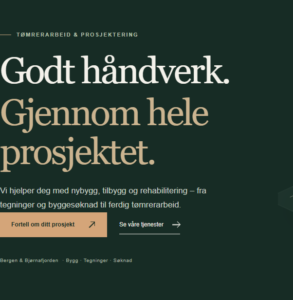

Før
Åpne hele siden →
Originale avstander og bunntekst er tilbake. Tidligere bestilte mobil-, meny- og knappetilpasninger er beholdt.
Åpne rettet forside → · Åpne før-versjonen →
GitHub er fortsatt en statisk testvisning. Kontaktknappen åpner hovednettsidens skjema; sending fra GitHub er ikke lagt til.